【NGK2021S】
画像処理デモの見栄えを
工夫したお話し
🙇🙇🙇 はじめに 🙇🙇🙇
・この発表はデモを多用しています
・回線遅延等は優しい目で見ていただけると幸いです
ある日の出来事。。。
※実在の人物や団体などとは関係無いと思われなくもないです
 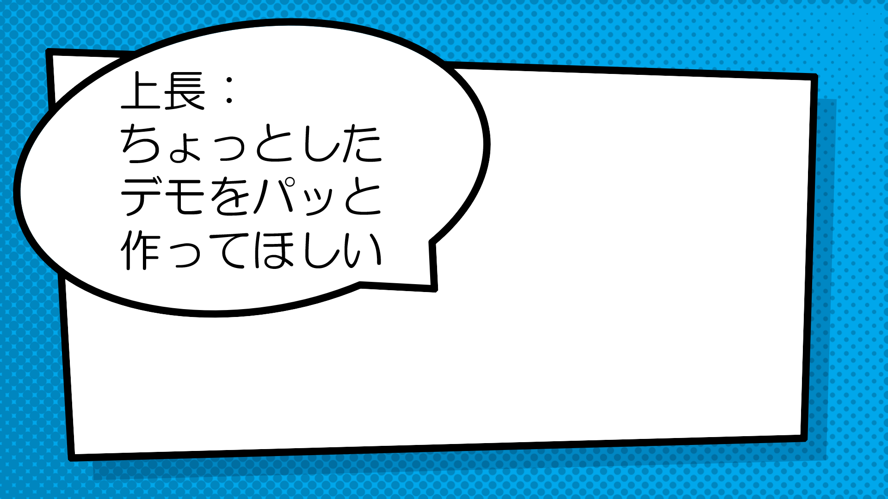
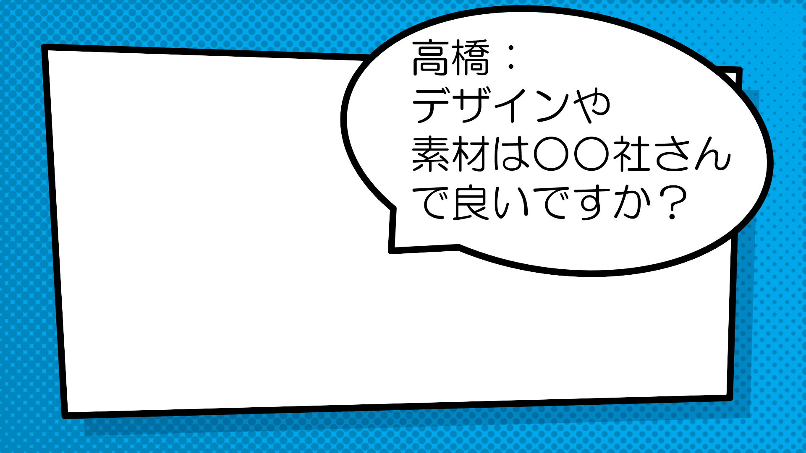
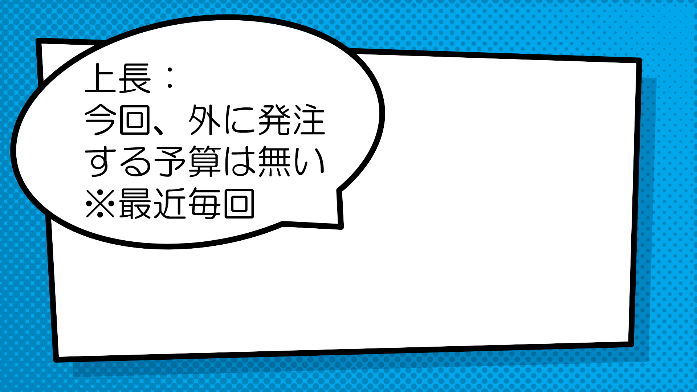
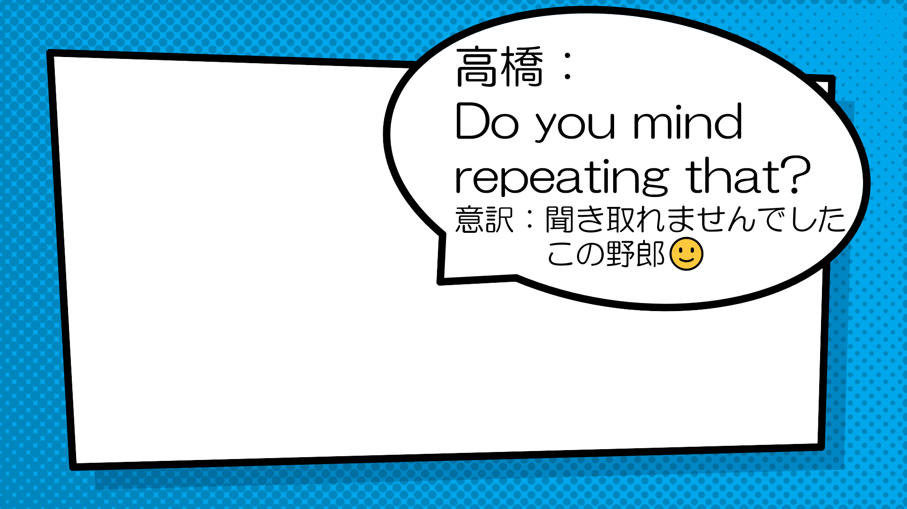
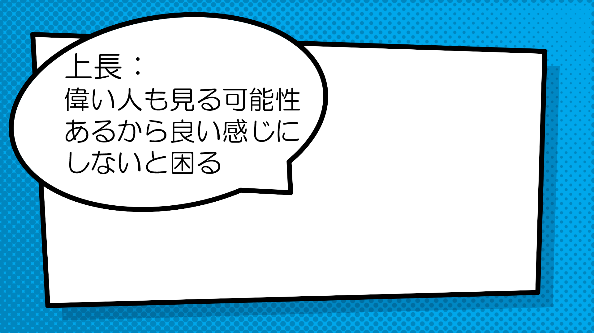
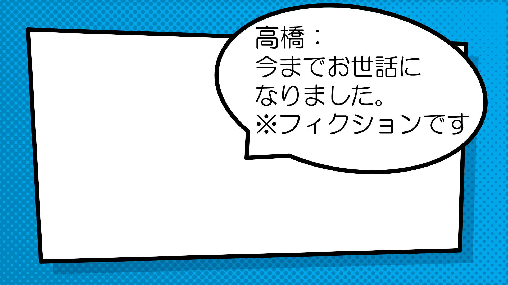
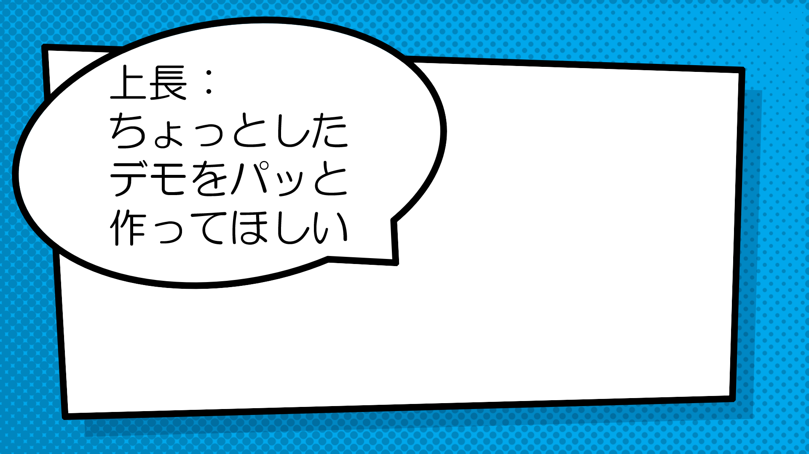
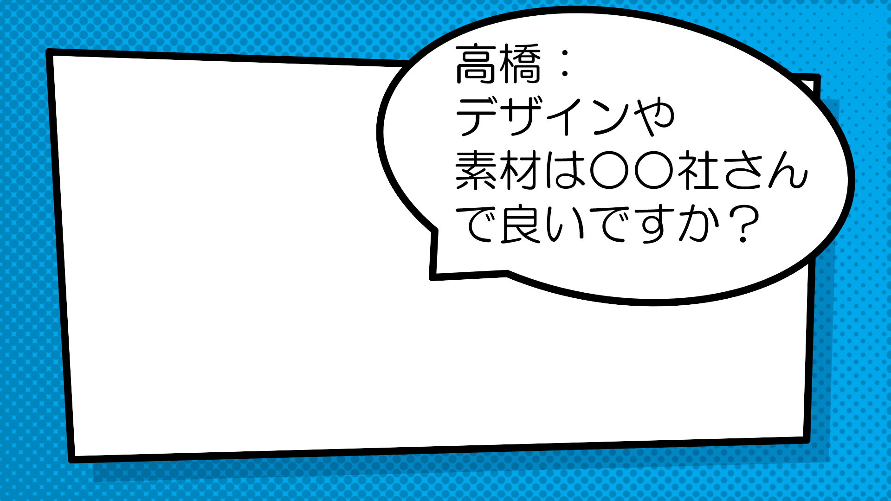
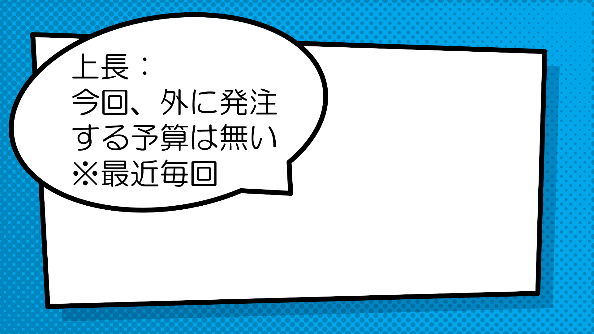
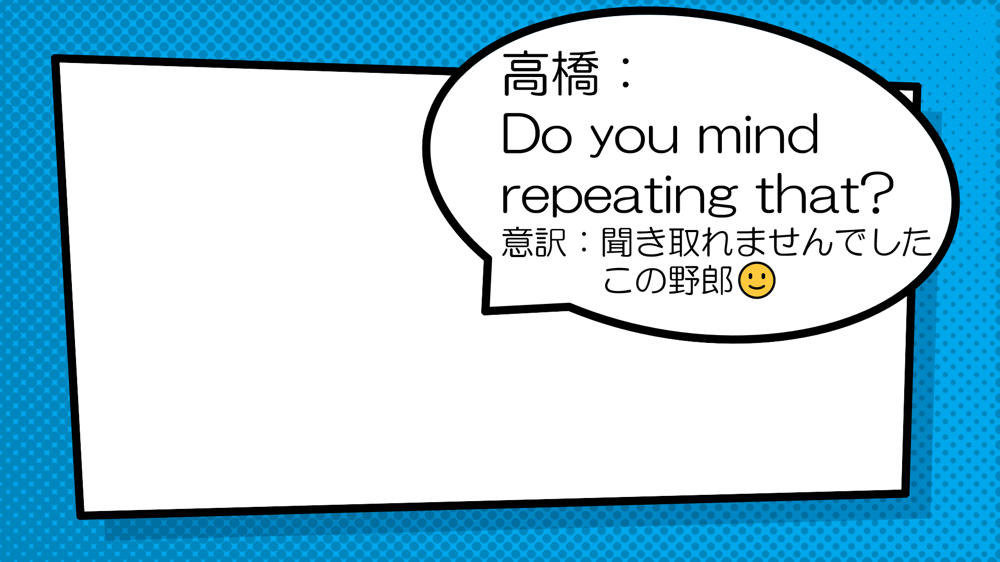
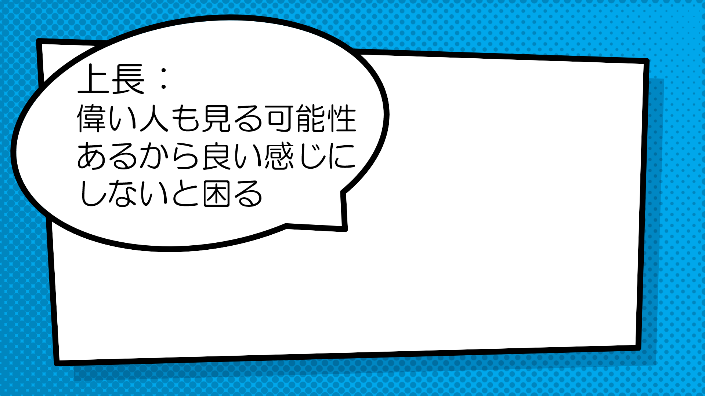
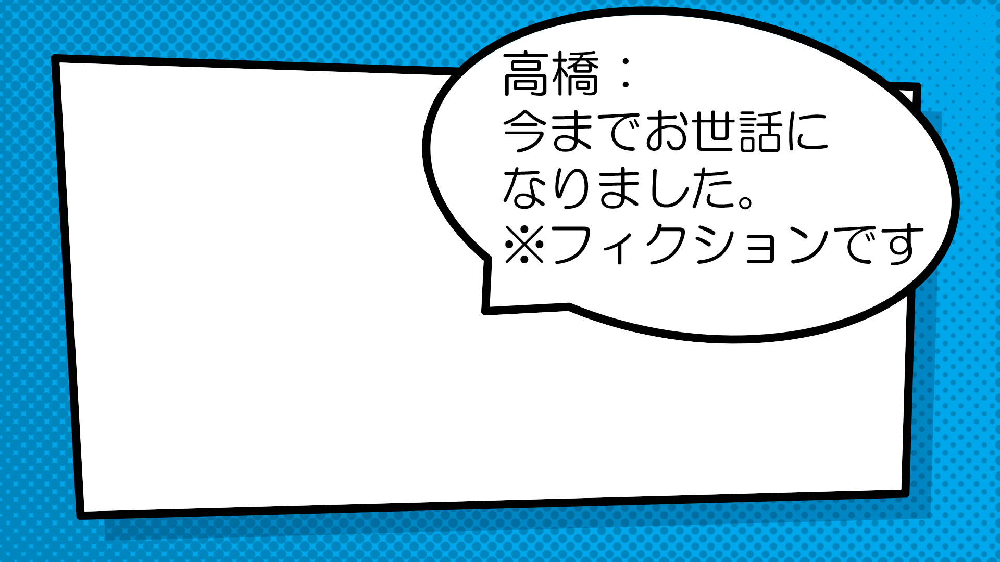
つまり、、、？
こんな、お話し
・リッチなデザインを外注するお金など無い
・でも、多少は見た目を気にしないと怒られそう
・（出来る範囲で）OpenCVとかPillowで装飾った
お前、誰よ？

名前：高橋かずひと
Twitter：@KzhtTkhs
お仕事：組込、画像処理、IoT、Web
個人でインディーゲーム制作お手伝いしてます。
出没先
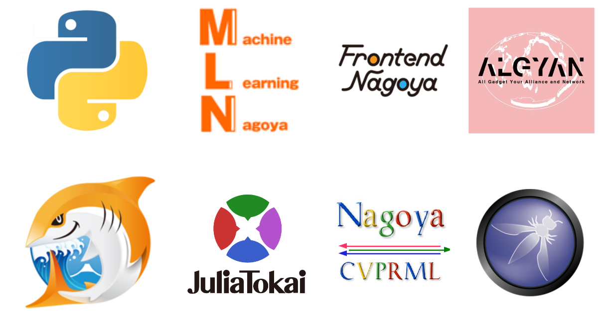
こんな、お話し（再掲）
・リッチなデザインを外注するお金など無い
・でも、多少は見た目を気にしないと怒られそう
・（出来る範囲で）OpenCVとかPillowで装飾った
こんな、お話し
・業務や趣味で作成したものを発表用に再現しました
・何かの参考になれば幸い🙃
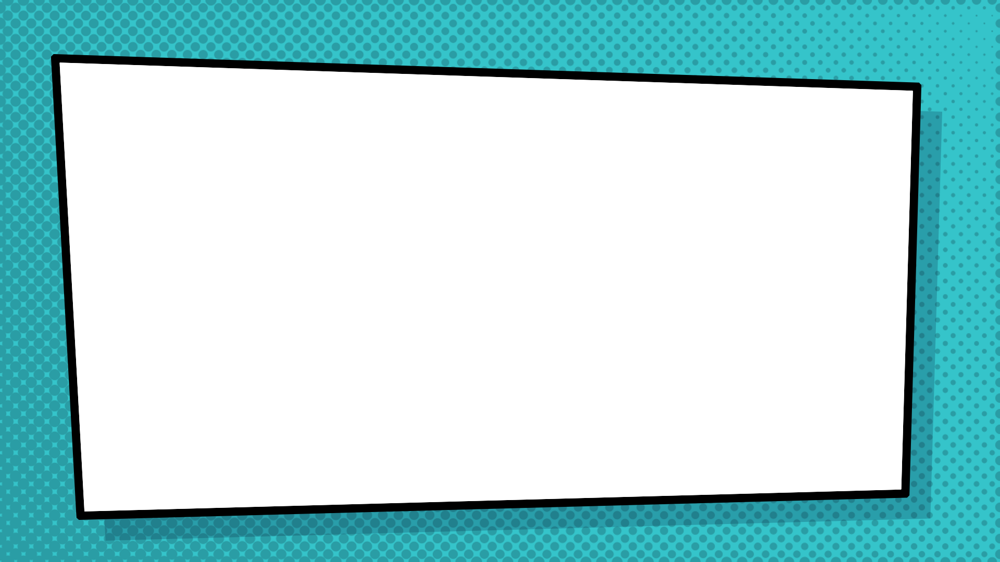
【作例①：画像分類(Classification)】
工夫点：
・ImageNetのラベルを英語のまま表示しない
・柔らか目の日本語フォントを使用
・何か解析している風な動きを付ける
【作例②：画像分類(Classification)】
工夫点：
・推論結果のスコアをバー表示
※ピコピコ動くバー好きなおっさんいるでしょ、、、？
【作例③：顔検出(Face Detection)】
工夫点：
・透過Pngを用いて四角くない画像でオーバーレイ表示
・オーバーレイする画像をアニメーションさせる
【作例④：手検出(Hand Detection)】
工夫点：
・数うちゃ当たる。。。
・※ぐるぐる回るやつの評判が良かった

【作例⑤：画像セグメンテーション(Semantic Segmentation)】
工夫点：
・PASCAL VOC 2012で良く見るカラーマップは使用しない
・デモで必要なクラス以外は表示しない
【作例⑥：画像変換】
工夫点：
・Webでよく見る画像Before/After比較パーツ風に作成